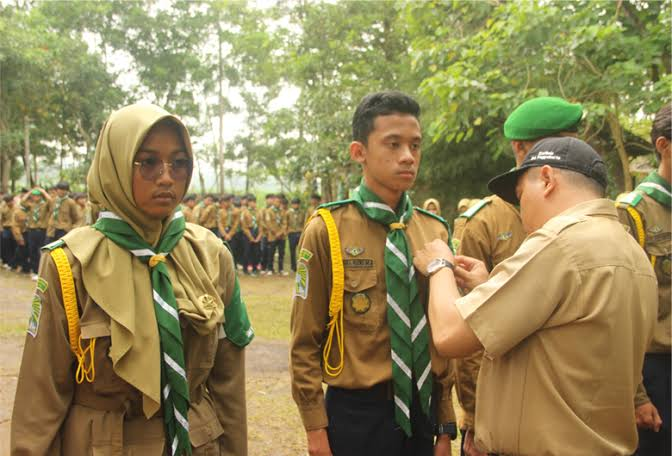
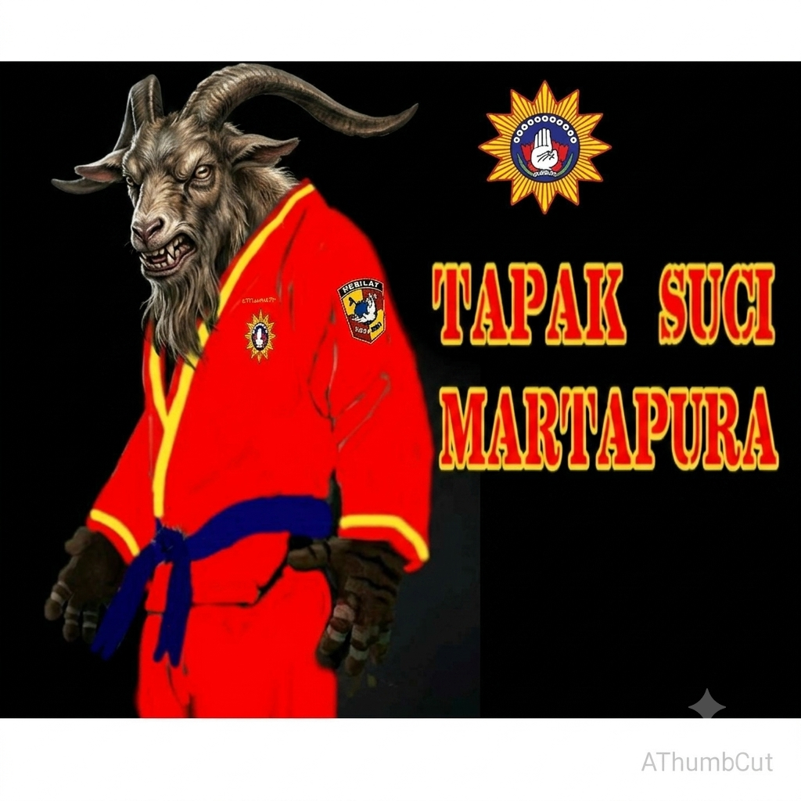

Hizbul Wathan (HW)
Melatih disiplin, kepemimpinan, dan kemandirian siswa.

Tapak Suci Muhammadiyah
Melatih bela diri, mental, dan membentuk karakter siswa.

Melatih disiplin, kepemimpinan, dan kemandirian siswa.

Melatih bela diri, mental, dan membentuk karakter siswa.